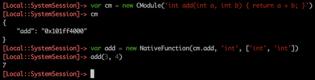
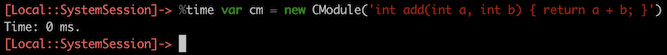

Frida 12.7 Released ∞
release oleavr
oleavr
There’s only one new feature this time, but it’s a big one. We’re going to address the elephant in the room: performance.
While Frida’s instrumentation core, Gum, is written in C and can be used from C, most use-cases are better off using its JavaScript bindings.
There are however situations where performance becomes an issue. Even when using our V8-based runtime, which means your JavaScript will be profiled while it’s running and optimized based on where the hotspots are… (Which by the way is amazing – V8 is truly an impressive feat of engineering!)
…there is a small price to pay for entering and leaving the JavaScript VM. On an iPhone 5S this might amount to something like six microseconds if you use Interceptor.attach() and only specify onEnter, and leave it empty.
This may not sound like a lot, but if a function is called a million times, it’s going to amount to 6 seconds of added overhead. And perhaps the hook only needs to do something really simple, so most of the time is actually spent on entering and leaving the VM.
There’s also the same kind of issue when needing to pass a callback to an API, where the API walks through potentially millions of items and needs to call the callback for each of them. The callback might just look at one byte and collect the few of the items that match a certain criteria.
Naively one could go ahead and use a NativeCallback to implement that callback, but it quickly becomes apparent that this just doesn’t scale.
Or, you might be writing a fuzzer and needing to call a NativeFunction in a tight loop, and the cost of entering/leaving the VM plus libffi just adds up.
Short of writing the whole agent in C, one could go ahead and build a native library, and load it using Module.load(). This works but means it has to be compiled for every single architecture, deployed to the target, etc.
Another solution is to use the X86Writer/Arm64Writer/etc. APIs to generate code at runtime. This is also painful as there’s quite a bit of work required for each architecture to be supported. But up until now this was the only portable option for use in modules such as frida-java-bridge.
But now we finally have something much better. Enter CModule:

It takes the string of C source code and compiles it to machine code, straight to memory. This is implemented using TinyCC, which means that this feature only adds ~100 kB of footprint to Frida.
As you can see, any global functions are automatically exported as NativePointer properties named exactly like in the C source code.
And, it’s fast:

(Measured on an Intel i7 @ 3.1 GHz.)
We can also use this new feature in conjunction with APIs like Interceptor:
const m = new CModule(`
#include <gum/guminterceptor.h>
#define EPERM 1
int
open (const char * path,
int oflag,
...)
{
GumInvocationContext * ic;
ic = gum_interceptor_get_current_invocation ();
ic->system_error = EPERM;
return -1;
}
`);
const openImpl = Module.getExportByName(null, 'open');
Interceptor.replace(openImpl, m.open);(Note that this and the following examples use modern JavaScript features like template literals, so they either need to be run on our V8 runtime, or compiled using frida-compile.)
We can also combine it with Interceptor.attach():
const openImpl = Module.getExportByName(null, 'open');
Interceptor.attach(openImpl, new CModule(`
#include <gum/guminterceptor.h>
#include <stdio.h>
void
onEnter (GumInvocationContext * ic)
{
const char * path;
path = gum_invocation_context_get_nth_argument (ic, 0);
printf ("open() path=\\"%s\\"\\n", path);
}
void
onLeave (GumInvocationContext * ic)
{
int fd;
fd = (int) gum_invocation_context_get_return_value (ic);
printf ("=> fd=%d\\n", fd);
}
`));Yay. Though this last particular example actually writes to stdout of the target process, which is fine for debugging but probably not all that useful.
We can however fix that by calling back into JavaScript. Let’s see what that might look like:
const openImpl = Module.getExportByName(null, 'open');
Interceptor.attach(openImpl, new CModule(`
#include <gum/guminterceptor.h>
extern void onMessage (const gchar * message);
static void log (const gchar * format, ...);
void
onEnter (GumInvocationContext * ic)
{
const char * path;
path = gum_invocation_context_get_nth_argument (ic, 0);
log ("open() path=\\"%s\\"", path);
}
void
onLeave (GumInvocationContext * ic)
{
int fd;
fd = (int) gum_invocation_context_get_return_value (ic);
log ("=> fd=%d", fd);
}
static void
log (const gchar * format,
...)
{
gchar * message;
va_list args;
va_start (args, format);
message = g_strdup_vprintf (format, args);
va_end (args);
onMessage (message);
g_free (message);
}
`, {
onMessage: new NativeCallback(messagePtr => {
const message = messagePtr.readUtf8String();
console.log('onMessage:', message);
}, 'void', ['pointer'])
}));That is however just a toy example: doing it this way will actually defeat the purpose of writing the hooks in C to improve performance. A real implementation might instead append to a GLib.Array after acquiring a GLib.Mutex, and periodically flush the buffered data by calling back into JS.
And just like JavaScript functions can be called from C, we can also share data between the two realms:
const calls = Memory.alloc(4);
const openImpl = Module.getExportByName(null, 'open');
Interceptor.attach(openImpl, new CModule(`
#include <gum/guminterceptor.h>
extern volatile gint calls;
void
onEnter (GumInvocationContext * ic)
{
g_atomic_int_add (&calls, 1);
}
`, { calls }));
setInterval(() => {
console.log('Calls so far:', calls.readInt());
}, 1000);For now we don’t have any docs on the built-in C APIs, but you can browse the headers in frida-gum/bindings/gumjs/runtime/cmodule to get an overview. Drop function names into an Internet search engine to look up docs for the non-Frida APIs such as GLib’s.
The intention is to only expose a minimal subset of the standard C library, GLib, JSON-GLib, and Gum APIs; in order to minimize bloat and maximize performance. Things we include should either be impossible to achieve by calling into JS, or prohibitively expensive to achieve that way.
Think of the JS side as the operating system where the functions you plug into it are system calls; and only use CModule for hooking hot functions or implementing high-performance glue code like callbacks passed to performance-sensitive APIs.
Also bear in mind that the machine code generated by TinyCC is not as efficient as that of Clang or GCC, so computationally expensive algorithms might actually be faster to implement in JavaScript. (When using our V8-based runtime.) But for hooks and glue code this difference isn’t significant, and you can always generate machine code using e.g. Arm64Writer and plug into your CModule if you need to optimize an inner loop.
One important caveat is that all data is read-only, so writable globals should
be declared extern, allocated using e.g. Memory.alloc(), and passed in as
symbols through the constructor’s second argument. (Like we did with calls in
the last example.)
You might also need to initialize things and clean them up when the CModule gets destroyed – e.g. because the script got unloaded – and we provide a couple of lifetime hooks for such purposes:
const cm = new CModule(`
#include <stdio.h>
void
init (void)
{
printf ("init\\n");
}
void
finalize (void)
{
printf ("finalize\\n");
}
`);
cm.dispose(); // or wait until it gets GCed or script unloadedAnyway, this post is getting long, but before we wrap up let’s look at how to use CModule with the Stalker APIs:
const cm = new CModule(`
#include <gum/gumstalker.h>
static void on_ret (GumCpuContext * cpu_context,
gpointer user_data);
void
transform (GumStalkerIterator * iterator,
GumStalkerOutput * output,
gpointer user_data)
{
cs_insn * insn;
while (gum_stalker_iterator_next (iterator, &insn))
{
if (insn->id == X86_INS_RET)
{
gum_x86_writer_put_nop (output->writer.x86);
gum_stalker_iterator_put_callout (iterator,
on_ret, NULL, NULL);
}
gum_stalker_iterator_keep (iterator);
}
}
static void
on_ret (GumCpuContext * cpu_context,
gpointer user_data)
{
printf ("on_ret!\n");
}
`);
const mainThread = Process.enumerateThreads()[0];
Stalker.follow(mainThread.id, {
transform: cm.transform,
data: ptr(1337)
});This shows how you can implement both the transform callback and the callouts in C, but you may also use a hybrid approach where you write the transform callback in JS and only some of the callouts in C.
It is also worth noting that I rewrote ObjC.choose() to use CModule, and it is now roughly 100x faster. When testing it on the login screen of the Twitter app on an iPhone 6S, this went from taking ~5 seconds to now only ~50 ms.
So with that, I hope you’ll enjoy this release. Excited to see what kind of things you will build with the new CModule API. One thing I’m really looking forward to is improving our REPL to support loading a .c file next to the .js, for rapid prototyping purposes.
Enjoy!
Changes in 12.7.0
- Brand new CModule API powered by TinyCC. (You just read about it.)
- TinyCC was improved to support Apple’s ABI on macOS/x86.
- Stalker.exclude() is now exposed to JS to be able to mark specific memory ranges as excluded. This is useful to improve performance and reduce noise.
- Concurrent calls to Java.use() are now supported, thanks to a neat contribution by @gebing.
- The hexdump() implementation was improved to clamp the length option to the length of the ArrayBuffer, thanks to another neat contribution by @gebing.
Changes in 12.7.1
- More CModule goodies, including GLib.String, GLib.Timer, and Json.Builder.
- TinyCC was improved to support Apple’s ABI on iOS/arm64.
- ObjC.choose() was rewritten using CModule, and is now ~100x faster.
Changes in 12.7.2
- CModule got some missing ref-counting APIs.
Changes in 12.7.3
- CModule memory ranges are now properly cloaked.
- The V8 garbage collector is now informed about externally allocated CModule memory so it can make better decisions about when to GC.
- Symbols attached to a CModule are now properly kept alive in the V8 runtime also; and the CModule itself is not kept alive indefinitely (or until script unload).
- CModule.dispose() was added for eagerly cleaning up memory.
Changes in 12.7.4
- The frida-inject tool now supports spawn(). Kudos to @hunterli for contributing this neat feature.
- Our V8 runtime no longer deadlocks on i/macOS when thread_suspend() is called with the JS lock still held, like Stalker.follow() indirectly does when asked to follow another thread.
Changes in 12.7.5
- Brand new channels API for establishing TCP connections to a tethered iOS or Android device, as well as talking to lockdown services on a tethered iOS device.
- The timeout logic behind DeviceManager.find_device() and its sibling methods is now working properly.
- Java marshaling of java.lang.Class is now working properly, and instance fields can also be introspected without needing an instance. Kudos to @gebing for contributing these neat fixes!
Changes in 12.7.6
- The Android linker is now properly detected on Android 10.
- Our Android SELinux policy patcher now also handles devices like Samsung S10, thanks to a neat contribution by @cbayet.
- The frida-inject tool now supports -D/–device for working with non-local devices.
- We now have better error-handling to avoid crashing when i/macOS processes terminate unexpectedly during early instrumentation.
- iOS crash reporter integration is way more robust, thanks to some awesome fixes contributed by @mrmacete. One of his fixes also ensures parallel calls to recv().wait() for the same message type don’t end up in an infinite wait.
- Stalking of thread creation is now supported on Linux/arm64. Kudos to @alvaro_fe for this awesome contribution!
- V8 runtime’s WebAssembly support is working again on non-iOS also.
- The Gum.DarwinModule API is now part of the cross-platform Gum API. Useful for parsing Mach-O files on non-Apple systems.
Changes in 12.7.7
- Eternalized agents are now kept around when the last session gets closed, which means they can be reused for as long as the HostSession side, e.g. frida-server, sticks around. This means that additional copies of frida-agent can be avoided in a lot of cases. Kudos to @mrmacete for this awesome improvement.
- Java bridge no longer triggers a use-after-free when a method returns this.
- Our Android SELinux policy patcher no longer prints a warning on older versions of Android. This harmless but confusing regression was introduced by the previous release’ fix for Samsung S10 ROMs.
- Better SELinux-related error messages.
- Rudimentary support for iOS/arm64e.
Changes in 12.7.8
- Android 10 support just landed in our Java bridge thanks to a brilliant contribution by @Alien-AV.
- Better spawn()-handling for Android apps, where the activity parameter can be used in cases where the app doesn’t have a launcher activity. This neat improvement was contributed by @muhzii.
- Android linker seeking logic was made future-proof thanks to an elegant contribution by @timstrazz.
- Massively improved fault-tolerance on iOS: our launchd agent now kills pending processes when unloaded. This means that frida-server dying won’t leave processes stuck in a suspended state. Kudos to @mrmacete for this awesome improvement.
Changes in 12.7.9
- We are back in business on macOS after a last-minute build regression snuck into the previous release.
Changes in 12.7.10
- MemoryAccessMonitor is now available on all platforms, and even the Duktape runtime. Kudos to @alvaro_fe for these awesome improvements.
- Android linker detection working properly again. (Regression introduced in 12.7.8.)
- Gadget was improved to support passing a config through its constructor function on i/macOS.
- Gadget’s system loop integration – only implemented on i/macOS – was removed to avoid undefined behavior in some scenarios.
Changes in 12.7.11
- Frida no longer crashes in Android processes without a vDSO. (Regression introduced in 12.7.8.)
- Better error-handling when parsing Mach-O images.
- ARM vs Thumb properly handled when restoring exception on i/macOS. Thanks @alvaro_fe!
- CModule’s header for JSON-GLib is now self-contained, as it should be.
Changes in 12.7.12
- Full-featured iOS lockdown integration and unified devices, so Frida-based tools don’t need to worry as much about jailed vs jailbroken. When interacting with a jailed iOS device, Gadget is now injected automatically and there is no need to repackage the app, it only has to be debuggable.
- Frida is finally able to detect recent iOS devices on Windows.
- Bug in V8 was tracked down and fix backported from upstream. Kudos to @mrmacete for tracking this one down!
Changes in 12.7.13
- Better handling of structs and unions in frida-objc-bridge. Thanks @gebing!
- Our Node.js bindings now also expose type definitions for Crash and CrashParameters.
- Attempts to attach to the system session on jailed iOS throw early and with a clearer error message.
- The iOS Developer Disk Image-related error messages were tweaked for consistency.
Changes in 12.7.14
- Frida now ensures code is readable before accessing it on Android >= 10. This was the last missing piece for full-featured Android 10 support. Being able to instrument system processes means that early instrumentation – i.e. spawn() – works, and starting frida-server doesn’t crash system_server due to the attempt it makes at preloading so the first spawn() will be fast. Kudos to @Alien-AV and @esanfelix for the painful research that made the solution possible to implement in one late Saturday evening. :-)
Changes in 12.7.15
- Node.js bindings also expose the “summary” field of the Crash typing.
Changes in 12.7.16
- The frida-gadget-ios meta-package comes with type definitions so it can be consumed from TypeScript.
- Node.js bindings provide proper typings for Stdio and ChildOrigin.
Changes in 12.7.17
- More robust support for jailed iOS: calling kill() before resume() but after attach() is now working properly.
- Frida now communicates directly with the remote iOS/Android agent when possible. We achieve this by establishing a fresh TCP connection to the frida-server and having its file-descriptor passed to the agent. This means frida-server can remove itself from the data path, improving performance and reliability.
- Clients connecting to frida-server to spawn() a process, but getting disconnected before they get a chance to resume() or kill() said process, will no longer leave such orphans in limbo. We now keep track of spawned processes and kill() them if the client suddenly gets disconnected.
- We no longer crash Zygote on Android 10. Turns out an SELinux rule was missing.
- Our TCP sockets now have TCP_NODELAY set, and we also support communicating with a remote frida-server or frida-gadget using UNIX sockets in addition to TCP.
- NativeFunction now supports variadic functions, to avoid needing to create one instance per unique argument list signature. Thanks @gebing!
Changes in 12.7.18
- Node.js bindings finally link in needed OpenSSL symbols on UNIX, instead of relying on luck where we’d usually end up in processes with another OpenSSL already loaded that’s globally visible and ABI-compatible (!).
Changes in 12.7.19
- We now properly handle apply() on NativeFunction w/o args in the V8 runtime also. Kudos to @taviso for reporting this long-standing bug.
- NativeFunction’s handling of optional args in call() and apply() now behaves like the builtin counterparts.
Changes in 12.7.20
- Frida now supports both cleartext and encrypted iOS lockdown channels, retaining support for “cleartext after TLS handshake”-style channels by appending “?tls=handshake-only” to the channel address. Kudos, @mrmacete!
- The paired lockdown channel itself can be accessed by using “lockdown:” as the channel address. Thanks @mrmacete!
Changes in 12.7.21
- We now support iOS 13 on the checkra1n jailbreak. (Jailed iOS 13 was already supported.)
Changes in 12.7.22
- Our iOS package scripts launch daemon logic is now compatible with checkra1n, so frida-server won’t have to be started/stopped manually.
Changes in 12.7.23
- Enhanced support for the checkra1n jailbreak: Stalker is now way faster as it makes use of RWX pages.
- Stability improvements when using Stalker on iOS on jailbreaks without RWX support. Thanks @mrmacete!
- CModule is now compatible with additional iOS jailbreak flavors. Kudos, @mrmacete!
- CModule runtime support for working with ModuleMap objects.
- Support for ARMBE8 thanks to awesome contributions by Jon Wilson.
- Frida now makes parent file-descriptors available to child processes when spawn()ing on i/macOS. This is consistent with the current behavior on Linux. Thanks @wizche!
Changes in 12.7.24
- Node.js prebuilds also provided for Node.js v13.
Changes in 12.7.25
- Log handler APIs got an overhaul in the Python and Node.js bindings, as part of a critical fix: the Node.js setter’s type wasn’t the same as the getter, as it also allowed null. This inconsistency resulted in recent TypeScript compiler versions choking on it. Thanks @mrmacete!
- No more timestamp truncations in the V8 platform integration. Thanks for reporting, @DaveManouchehri!
- Our Module.enumerateSymbols() API provides a “size” property when available, i.e. only on Linux/Android for now. Thanks @DaveManouchehri!
- Java.use(name, { cache: ‘skip’ }) can now be used to bypass caching. Useful when dealing with multiple class-loaders and colliding class names. Thanks @ChaosData and @H4oK3!
Changes in 12.7.26
- Stalker now supports temporary reactivation, to allow stalking code from inside an excluded memory range.
- NativeFunction got a brand new option
traps: 'all'to allow calls to be stalked even when Frida’s own memory range is marked as excluded. - Thread enumeration on Linux is finally working when using Yama. Thanks Jon Wilson!